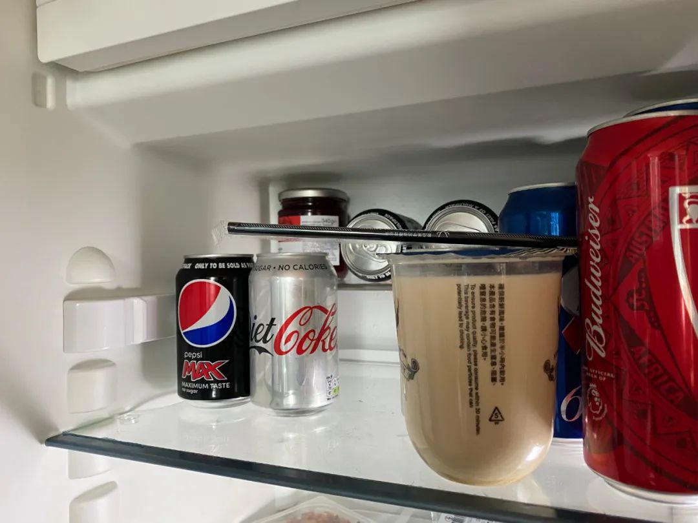
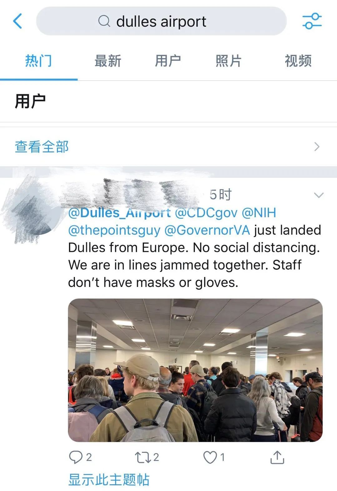

英国“隔离”日记 || 3月14日：我决定记录未来每一个无聊的日子
原文链接 备份链接 今天是3月15日，月相为60%的下弦月。 It is March 15 with a 60 percent of Last Quarter. 距离新月还有 9 天。 There are 9 days until New …

今天是3月16日，月相为49%的下弦月。
It is March 16 with a 49 percent of Last Quarter.
距离新月还有 8 天。
There are 8 days until New Moon.
文 || 白清扬
这首歌一直是我的最爱之一，
_但是昨天我发现它在QQ音乐下架了。
_
我为了把它放到我QQ音乐的播放列表里，
我在虾米音乐上把它下载了下来，
又导入到了QQ音乐列表里……
《青春是把上了膛的枪》，丝绒公路乐队。
一
今天学乖了，在写文章之前先点燃了香薰蜡烛。

△ 奇香逼人的花茶。很多人可能没法接受。
晚上换了一种花茶，Fauchon公司的The Noir Parfume Auguste。奇香逼人。打开茶盒，花瓣粉末浓郁的甜香裹着不知从哪里派生的苹果味道弥漫整个房间。配料表里，除了来自中国的红茶，剩下三样全都来自鲜花：玫瑰花蕾、玫瑰花瓣和红花花瓣。
我还是要重申昨天的观点：我不喜欢花茶。每天最愉快的喝茶体验，是下午时分，当伦敦难以得见的阳光透过落地窗笼罩整个房间，坐在窗前的我泡上一壶水仙，或是一壶滇红。中国传统的乌龙茶与红茶有一种奇特的安抚效果。我宁愿相信这是一种基于传统文化的心理作用：在我或许有些东方主义的想象中，中国的品茗方式必然是典雅的、平和的。《阳关三叠》或是《卧龙吟》，在古琴铮铮中，用平静与恬淡的心作最冷峻的思考。

△ 推荐一下“自得琴社”。
别笑，我真的听古琴学习过的。虽然我听不懂，但效果拔群，确实有安抚人心的效果。
二
今天下午有点不同，因为我没有喝完我泡的滇红。
我那因为室友抓狂的好友今天崩溃了。她本就容易焦虑，室友的漠不关心更让她心寒又气愤。我对她说，你应该和他发火，有些人就是被从小宠到大，目中无人惯了。训他一顿就好。她说，她还要和这个奇葩住到下半年，她可不想为了撒气让自己未来这半年的日子更加难过。
想起我四月份就回国，便对她说，你可以来我家住。她爽快地答应了。合作愉快，我不喜欢假客套。解决了老大难问题，我就琢磨着帮她分担另一部分压力。
她在伦敦正帮着一家奶茶店做线上宣传工作。你们在社交媒体上看到那许多精美的照片，都是她捧着几大杯奶茶，到隔壁的Pret A Manger拍出来的。虽然有些对不起这家Pret，但他们也算是为了同行的发展做了贡献，就给他们一个安慰奖吧。
我在伦敦的中餐外卖软件上点了三杯奶茶，算是支持她的工作。
三
说实话，下单之前我很有些犹豫。我已经自我“隔离”十二天了，虽然去过三趟超市，但是对于一站地以外的世界已经完全没有概念了。现在点外卖，会有感染的风险吗？不过转念一想，即使有风险我也有办法对付，便选了三杯奶茶，下了单。在伦敦，奶茶店的外卖普遍有最低消费限制，金额通常需要至少三杯奶茶。这家店也不例外。我流着（也不知是幸福的还是痛苦的）眼泪，选了一杯热的和两杯凉的。

△ 忽略我的头像……我是真的在家里呆了十二天了。
开门接外卖的时候，我侧着身屏住呼吸拿住了外卖的塑料袋，飞快说了一句“thank you”，便匆匆关上大门。我将装着满满三杯奶茶的塑料袋放在玄关的地板上，头也不回地冲向洗手间，先仔仔细细地洗了手，时间长度至少够我唱三次《生日快乐歌》。鲍里斯真应该给我颁发奖状。
洗完手擦干，又抹上了酒精洗手液，这才走到客厅，拿起酒精杀毒喷雾，逐渐接近那个正躺在玄关迎接审判的塑料袋。别担心，塑料袋是系好了扣的，这喷雾不会殃及奶茶。我在塑料袋上空大概一米高的位置，用尽浑身解数捏了三次“扳机”，眼睁睁地看着水雾像雪花，又像毛毛细雨一样均匀地落在塑料袋上，滋润着它的每一寸肌肤。我心满意足，转身回到屋里，坐在电脑前，打开论文，又开心地玩了五分钟的手机。
五分钟后，我心想差不多了，这才抽出两张卫生纸，走到玄关，打开塑料袋，用卫生纸将三杯奶茶和吸管拿进屋里，随后又冲进了卫生间，洗了一遍手。
等我喝到奶茶的时候，唯一是热饮的那杯已经变凉了；而两杯冷饮也逐渐变成常温。
四
最终，这三杯奶茶也没能被我消灭干净。我将剩下一杯冻在冰箱里，准备明天喝，却也不知道喝隔夜奶茶会不会影响肠胃。想起两个月前，我也无数次嘴馋，一个人在家却想点奶茶外卖，看着三杯奶茶的最低消费望而却步。如果我有了女朋友，做起决定来就会轻松多了吧。

△ 被我冷藏了的那杯奶茶……
单身有单身的烦恼，情侣也有情侣的烦恼。我那位卡斯商学院的好友无法前往美国了。距离特朗普关闭英美边境还有不到两天，美国最后几座依然接收由英国及爱尔兰起飞的航班的机场人满为患。入关通道“万人空巷”——之所以加上引号是因为这个词用来形容海关实在是不伦不类——最长等待时间据说达到了六个小时。

更可怕的是，海关的工作人员没有一个戴口罩；而排队的游客，也绝少戴上口罩者。

一个巨大的“培养皿”。
她的男友原在三月上旬计划来英，却因疫情耽搁下来。如今情况反转，她也无缘亲赴美国与其相会。个中酸楚，自是不足为外人道了。
五
我们学校在过去的四周其实一直处于罢工状态，原本就不上课。按照原计划，明天是罢工结束后恢复课程的第一天（也是我本科生涯的最后两周），却因疫情影响而无法前往学校。
老师发来邮件，提前告知这是他第一次组织网课，实在不会操作，要做好课上不了的准备。泡在论文海洋里的我一篇reading都没读，本来就不希望上课，便在心中默默祈祷老师不要太快学会操作。
一周结束了。新的一周，我并不期待什么。毕竟，明天会怎么样，我们都不知道呢。

往期英国日记
3月14日：我决定记录未来每一个无聊的日子（白清扬）
白清扬往期文章
散文 || 嫁给怒放的青春
杂文 || 肖战极端粉丝做错了三件事
批评/杂文 || 中华文明璀璨的诗歌文化是指引我们的唯一向导
杂文 || 让我们的声音，成为推动历史前进的声音
抗疫特辑 || 不要让造谣与攻击成为群众唯一的权力
责任编辑：沙士淳。
排版：白清扬。
封面图、首图、尾图：唐颂。

长按二维码向我转账
受苹果公司新规定影响，微信 iOS 版的赞赏功能被关闭，可通过二维码转账支持公众号。
原文链接 备份链接 今天是3月15日，月相为60%的下弦月。 It is March 15 with a 60 percent of Last Quarter. 距离新月还有 9 天。 There are 9 days until New …
原文链接 备份链接 《创新经济战疫计划》，是燃财经在新型肺炎疫情期间推出的特别栏目，关注创新经济企业遇到的新难题、商讨应该采取的新对策，希望能够帮助中小企业一起战胜挑战、把握机会。 作者 | 苏琦 编辑 | 魏佳 新冠疫情爆发以来，和“ …
原文链接 备份链接 非常时期 他们的存在是照亮黑暗的光在武汉坚守工作岗位的普通人 户外探险队志愿者大象，打开后备箱，打开一个水果罐头，将糖水一饮而尽。 1月23日武汉封城，1月26日，武汉实行中心城区机动车禁行管理，出租车停运，医护人员的 …
原文链接 备份链接 从疫情中逆势营业遭质疑，到免费送餐获大规模订购，再到自救中发现餐饮食品化的转型新路，在这位餐饮老板眼中，疫情一度令其遭受巨大经济损失，也练就了团队在逆境中的生存和创新能力 为抗疫一线的医护人员等制作免费餐食（图源/受访 …
原文链接 备份链接 他们都有着细碎的烦恼、担忧、庆幸与反思疫情如洪水涌来，没有人能全身而退。 何时能完全恢复正常是大家都关心的问题。解封复工的消息不断传来，公园的花开了，路上的车多了起来，城市复活了。有人回归车间和工位，更多人早已开始远程 …